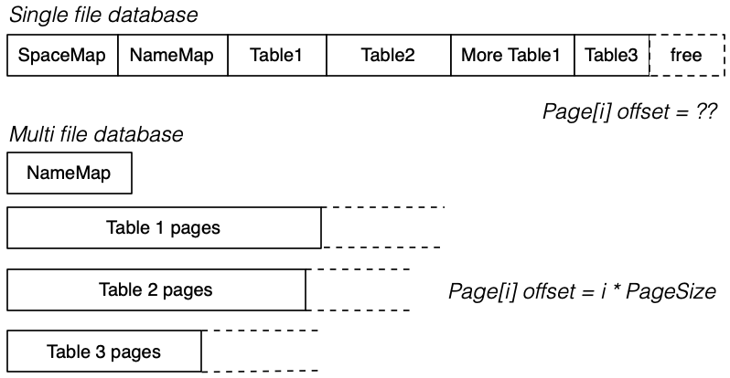
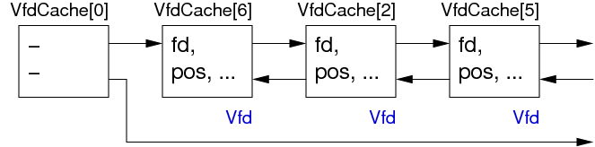

COMP9315 Week 02 Monday Lecture
COMP9315 24T1 ♢ Week 2 Monday Lecture ♢ [0/51]
- Prac Exercise 01: get your PostgreSQL servers installed ASAP
- Help Session: K17-410, Tuesday 11.30 - 3.00 sharp
- Assignment 1: due 11:59pm, Fri 15 March (Week 5)
- requires you to to have a working PG server
- useful to look at PG doc and Prac Exercise P04 first
- testing harness and
give available Wednesday
- Quiz 1: due 6pm, Fri 23 Feb (solutions: 9am Mon 26 Feb)
- Power off in K17 6pm Fri 23 Feb (no servers, no Webcms)
COMP9315 24T1 ♢ Week 2 Monday Lecture ♢ [1/51]
COMP9315 24T1 ♢ Week 2 Monday Lecture ♢ [2/51]
An important aspect of this course is
- analysis of cost of various query methods
Cost can be measured in terms of
- Time Cost: total time taken to execute method, or
- Page Cost: number of pages read and/or written
Primary assumptions in our cost models:
- memory (RAM) is "small", fast, byte-at-a-time
- bulk storage is very large, slow, page-at-a-time
Page = fixed-size block of data; size determined by storage medium
COMP9315 24T1 ♢ Week 2 Monday Lecture ♢ [3/51]
Since time cost is affected by many factors
- speed of i/o to/from storage devices (disk, SSD)
- load on machine
we do not consider time cost in our analyses.
For comparing methods, page cost is better
- identifies the workload imposed by a given method
Measures the number of page read/write
requests made.
Estimating costs with multiple concurrent operations and buffering is difficult!!
COMP9315 24T1 ♢ Week 2 Monday Lecture ♢ [4/51]
Terminology:
- attribute = atomic value (e.g. int, string)
- tuple = record, list of values
- relation = table, set of records
- page = fixed-size block of data
- database = collection of tables, constraints, ...
COMP9315 24T1 ♢ Week 2 Monday Lecture ♢ [5/51]
In developing cost models, we make assumptions on how DBMSs store data:
- a relation is a set of r tuples, with average size R bytes
- the tuples are stored in b data pages on a storage device
- each page has size B bytes and contains up to c tuples
- the tuples which answer query q are contained in bq pages
- data is transferred bulk-storage↔memory in whole pages
- cost of bulk-storage↔memory transfer Tr/w is high
COMP9315 24T1 ♢ Week 2 Monday Lecture ♢ [6/51]
Typical DBMS/table parameter values:
| Quantity |
| Symbol |
| E.g. Value |
| total # tuples |
| r |
| 106 |
| record size |
| R |
| 128 bytes |
| total # pages |
| b |
| 105 |
| page size |
| B |
| 8192 bytes |
| # tuples per page |
| c |
| 60 |
| page read/write time |
| Tr ,Tw |
| 10 msec |
cost to process
one page in memory |
| - |
| ≅ 0 |
COMP9315 24T1 ♢ Week 2 Monday Lecture ♢ [7/51]
Our cost models are "rough" (based on assumptions)
But do give an O(x) feel for how expensive operations are.
Example "rough" estimation: how many piano tuners in Sydney?
- Sydney has ≅ 4 000 000 people
- Average household size ≅ 3 ∴ 1 300 000 households
- Let's say that 1 in 10 households owns a piano
- Therefore there are ≅ 130 000 pianos
- Say people get their piano tuned every 2 years (on average)
- Say a tuner can tune 2/day, working 250 days per year
- Therefore 1 tuner can tune 500 pianos per year
- Therefore Sydney would need ≅ 130000/2/500 = 130 tuners
Actual number of piano tuners in Yellow Pages = 120
Example borrowed from Alan Fekete at Sydney University.
COMP9315 24T1 ♢ Week 2 Monday Lecture ♢ [8/51]
❖ Exercise: Relation Scan Cost | |
Consider a table R(x,y,z) with 105 tuples, implemented as
- number of tuples r = 10,000
- average size of tuples R = 200 bytes
- size of data pages B = 4096 bytes
- time to read one data page Tr = 10msec
- time to check one tuple 0.5 usec
- time to form one result tuple 1 usec
- time to write one result page Tw = 10msec
Calculate the total time-cost for answering the query:
insert into S select * from R where x > 10;
if 50% of the tuples satisfy the condition.
COMP9315 24T1 ♢ Week 2 Monday Lecture ♢ [9/51]
COMP9315 24T1 ♢ Week 2 Monday Lecture ♢ [10/51]
Persistent storage is
- large, cheap, relatively slow, accessed in blocks
- used for long-term storage of data
Computational storage is
- small, expensive, fast, accessed by byte/word
- used for all analysis of data
Access cost HDD:RAM ≅ 100000:1, e.g.
- 10ms to read block containing two tuples
- 1µs to compare fields in two tuples
COMP9315 24T1 ♢ Week 2 Monday Lecture ♢ [11/51]
❖ Storage Technology (cont) | |
Hard disks are well-established, cheap, high-volume, ...
Alternative bulk storage: SSD
- faster than HDDs, no latency
- can read single items
- update requires block erase then write
- over time, writes "wear out" blocks
- require controllers that spread write load
Feasible for long-term, high-update environments?
COMP9315 24T1 ♢ Week 2 Monday Lecture ♢ [12/51]
❖ Storage Technology (cont) | |
Comparison of HDD and SSD properties:
| | HDD | SSD |
| Cost/byte |
~ $13 / TB
| ~ $35 / TB |
| Read latency |
~ 6ms |
~ 50µs |
| Write latency |
~ 6ms |
~ 900µs |
| R/W rate |
150MB/s |
450MB/s |
| Read unit |
block (e.g. 1KB) |
byte |
| Writing |
write a block |
write on empty block |
Will SSDs ever completely replace HDDs?
COMP9315 24T1 ♢ Week 2 Monday Lecture ♢ [13/51]
Part of DBMS related to storage management:
COMP9315 24T1 ♢ Week 2 Monday Lecture ♢ [14/51]
❖ Storage Management (cont) | |
Aims of storage management in DBMS:
- provide view of data as collection of pages/tuples
- map from database objects (e.g. tables) to disk files
- manage transfer of data to/from disk storage
- use buffers to minimise disk/memory transfers
- interpret loaded data as tuples/records
- basis for file structures used by access methods
COMP9315 24T1 ♢ Week 2 Monday Lecture ♢ [15/51]
Topics in storage management ...
- Disks and Files
- performance issues and organisation of disk files
- Buffer Management
- using caching to improve DBMS system throughput
- Tuple/Page Management
- how tuples are represented within disk pages
- DB Object Management (Catalog)
- how tables/views/functions/types, etc. are represented
COMP9315 24T1 ♢ Week 2 Monday Lecture ♢ [16/51]
❖ Views of Data in Query Evaluation | |
COMP9315 24T1 ♢ Week 2 Monday Lecture ♢ [17/51]
❖ Views of Data in Query Evaluation (cont) | |
Representing database objects during query evaluation:
-
DB (handle on an authorised/opened database)
-
Rel (handle on an opened relation)
-
Page (memory buffer to hold contents of disk block)
-
Tuple (chunk of memory holding data values from one tuple)
Addressing in DBMSs:
-
PageID = FileID+Offset ... identifies a block of data
- where
Offset gives location of block within file
-
TupleID = PageID+Index ... identifies a single tuple
- where
Index gives "location" of tuple within page
COMP9315 24T1 ♢ Week 2 Monday Lecture ♢ [18/51]
Aims of file management subsystem:
- organise layout of data within the filesystem
- handle mapping from database ID to file address
- transfer blocks of data between buffer pool and filesystem
- also attempts to handle file access error problems (retry)
Builds higher-level operations on top of OS file operations.
COMP9315 24T1 ♢ Week 2 Monday Lecture ♢ [19/51]
Typical file operations provided by the operating system:
fd = open(fileName,mode)
close(fd)
nread = read(fd, buf, nbytes)
nwritten = write(fd, buf, nbytes)
lseek(fd, offset, seek_type)
fsync(fd)
COMP9315 24T1 ♢ Week 2 Monday Lecture ♢ [20/51]
How is data for DB objects arranged in the file system?
Different DBMSs make different choices, e.g.
- by-pass the file system and use a raw disk partition
- have a single very large file containing all DB data
- have several large files, with tables spread across them
- have multiple data files, one for each table
- have multiple files for each table
- etc.
COMP9315 24T1 ♢ Week 2 Monday Lecture ♢ [21/51]
Consider a single file for the entire database (e.g. SQLite)
Objects are allocated to regions (segments) of the file.
If an object grows too large for allocated segment, allocate an extension.
What happens to allocated space when objects are removed?
COMP9315 24T1 ♢ Week 2 Monday Lecture ♢ [22/51]
❖ Single-file DBMS (cont) | |
Allocating space in Unix files is easy:
- simply seek to the place you want and write the data
- if nothing there already, data is appended to the file
- if something there already, it gets overwritten
If the seek goes way beyond the end of the file:
- Unix does not (yet) allocate disk space for the "hole"
- allocates disk space only when data is written in the hole
With the above, a disk/file manager is easy to implement.
COMP9315 24T1 ♢ Week 2 Monday Lecture ♢ [23/51]
❖ Single-file Storage Manager | |
Consider the following simple single-file DBMS layout:
E.g.
SpaceMap = [ (0,10,U), (10,10,U), (20,600,U), (620,100,U), (720,20,F) ]
TableMap = [ ("employee",20,500), ("project",620,40) ]
COMP9315 24T1 ♢ Week 2 Monday Lecture ♢ [24/51]
❖ Single-file Storage Manager (cont) | |
Each file segment consists of a number fixed-size blocks
The following data/constant definitions are useful
#define PAGESIZE 2048
typedef long PageId;
typedef char *Page;
Typical PAGESIZE values: 1024, 2048, 4096, 8192
COMP9315 24T1 ♢ Week 2 Monday Lecture ♢ [25/51]
❖ Single-file Storage Manager (cont) | |
Storage Manager data structures for opened DBs & Tables
typedef struct DBrec {
char *dbname;
int fd;
SpaceMap map;
NameTable names;
} *DB;
typedef struct Relrec {
char *relname;
int start;
int npages;
...
} *Rel;
COMP9315 24T1 ♢ Week 2 Monday Lecture ♢ [26/51]
❖ Example: Scanning a Relation | |
With the above disk manager, our example:
select name from Employee
might be implemented as something like
DB db = openDatabase("myDB");
Rel r = openRelation(db,"Employee");
Page buffer = malloc(PAGESIZE*sizeof(char));
for (int i = 0; i < r->npages; i++) {
PageId pid = r->start+i;
get_page(db, pid, buffer);
for each tuple in buffer {
get tuple data and extract name
add (name) to result tuples
}
}
COMP9315 24T1 ♢ Week 2 Monday Lecture ♢ [27/51]
❖ Single-File Storage Manager | |
DB openDatabase(char *name) {
DB db = new(struct DBrec);
db->dbname = strdup(name);
db->fd = open(name,O_RDWR);
db->map = readSpaceTable(db->fd);
db->names = readNameTable(db->fd);
return db;
}
void closeDatabase(DB db) {
writeSpaceTable(db->fd,db->map);
writeNameTable(db->fd,db->map);
fsync(db->fd);
close(db->fd);
free(db->dbname);
free(db);
}
COMP9315 24T1 ♢ Week 2 Monday Lecture ♢ [28/51]
❖ Single-File Storage Manager (cont) | |
Rel openRelation(DB db, char *rname) {
Rel r = new(struct Relrec);
r->relname = strdup(rname);
r->start = ...;
r->npages = ...;
return r;
}
void closeRelation(Rel r) {
free(r->relname);
free(r);
}
COMP9315 24T1 ♢ Week 2 Monday Lecture ♢ [29/51]
❖ Single-File Storage Manager (cont) | |
void get_page(DB db, PageId p, Page buf) {
lseek(db->fd, p*PAGESIZE, SEEK_SET);
read(db->fd, buf, PAGESIZE);
}
void put_page(DB db, PageId p, Page buf) {
lseek(db->fd, p*PAGESIZE, SEEK_SET);
write(db->fd, buf, PAGESIZE);
}
COMP9315 24T1 ♢ Week 2 Monday Lecture ♢ [30/51]
❖ Single-File Storage Manager (cont) | |
Managing contents of space mapping table can be complex:
PageId allocate_pages(DB db, int n) {
if (no existing free chunks are large enough) {
int endfile = lseek(db->fd, 0, SEEK_END);
addNewEntry(db->map, endfile, n);
} else {
grab "worst fit" chunk
split off unused section as new chunk
}
}
COMP9315 24T1 ♢ Week 2 Monday Lecture ♢ [31/51]
❖ Single-File Storage Manager (cont) | |
Similar complexity for freeing chunks
void deallocate_pages(DB db, PageId p, int n) {
if (no adjacent free chunks) {
markUnused(db->map, p, n);
} else {
merge adjacent free chunks
compress mapping table
}
}
Changes take effect when closeDatabase() executed.
COMP9315 24T1 ♢ Week 2 Monday Lecture ♢ [32/51]
❖ Multiple-file Disk Manager | |
Most DBMSs don't use a single large file for all data.
They typically provide:
- multiple files partitioned physically or logically
- mapping from DB-level objects to files (e.g. via meta-data)
Precise file structure varies between individual DBMSs.
Using multiple files (one file per relation) can be easier, e.g.
- adding a new relation
- extending the size of a relation
- computing page offsets within a relation
COMP9315 24T1 ♢ Week 2 Monday Lecture ♢ [33/51]
❖ Multiple-file Disk Manager (cont) | |
Example of single-file vs multiple-file:

Consider how you would compute file offset of page[i] in table[1] ...
COMP9315 24T1 ♢ Week 2 Monday Lecture ♢ [34/51]
❖ Multiple-file Disk Manager (cont) | |
Structure of PageId for data pages in such systems ...
If system uses one file per table, PageId contains:
- relation indentifier (which can be mapped to filename)
- page number (to identify page within the file)
If system uses several files per table,
PageId contains:
- relation identifier
- file identifier (combined with relid, gives filename)
- page number (to identify page within the file)
COMP9315 24T1 ♢ Week 2 Monday Lecture ♢ [35/51]
❖ PostgreSQL Storage Manager | |
PostgreSQL uses the following file organisation ...
COMP9315 24T1 ♢ Week 2 Monday Lecture ♢ [36/51]
❖ PostgreSQL Storage Manager (cont) | |
Components of storage subsystem:
- mapping from relations to files (
RelFileNode)
- abstraction for open relation pool (
storage/smgr)
- functions for managing files (
storage/smgr/md.c)
- file-descriptor pool (
storage/file)
PostgreSQL has two basic kinds of files:
- heap files containing data (tuples)
- index files containing index entries
Note: smgr designed for many storage devices; only disk handler provided
COMP9315 24T1 ♢ Week 2 Monday Lecture ♢ [37/51]
PostgreSQL identifies relation files via their OIDs.
The core data structure for this is RelFileNode:
typedef struct RelFileNode {
Oid spcNode;
Oid dbNode;
Oid relNode;
} RelFileNode;
Global (shared) tables (e.g. pg_database) have
-
spcNode == GLOBALTABLESPACE_OID
-
dbNode == 0
COMP9315 24T1 ♢ Week 2 Monday Lecture ♢ [38/51]
❖ Relations as Files (cont) | |
The relpath function maps RelFileNode to file:
char *relpath(RelFileNode r)
{
char *path = malloc(ENOUGH_SPACE);
if (r.spcNode == GLOBALTABLESPACE_OID) {
Assert(r.dbNode == 0);
sprintf(path, "%s/global/%u",
DataDir, r.relNode);
}
else if (r.spcNode == DEFAULTTABLESPACE_OID) {
sprintf(path, "%s/base/%u/%u",
DataDir, r.dbNode, r.relNode);
}
else {
sprintf(path, "%s/pg_tblspc/%u/%u/%u", DataDir
r.spcNode, r.dbNode, r.relNode);
}
return path;
}
COMP9315 24T1 ♢ Week 2 Monday Lecture ♢ [39/51]
❖ Exercise: PostgreSQL Files | |
In your PostgreSQL server
- examine the content of the
$PGDATA directory
- find the directory containing the
pizza database
- find the file in this directory for the
People table
- examine the contents of the
People file
- what are the other files in the directory?
- are there forks in any of your databases?
COMP9315 24T1 ♢ Week 2 Monday Lecture ♢ [40/51]
Unix has limits on the number of concurrently open files.
PostgreSQL maintains a pool of open file descriptors:
- to hide this limitation from higher level functions
- to minimise expensive
open() operations
File names are simply strings:
typedef char *FileName
Open files are referenced via: typedef int File
A File is an index into a table of "virtual file descriptors".
COMP9315 24T1 ♢ Week 2 Monday Lecture ♢ [41/51]
❖ File Descriptor Pool (cont) | |
Interface to file descriptor (pool):
File FileNameOpenFile(FileName fileName,
int fileFlags, int fileMode);
File OpenTemporaryFile(bool interXact);
void FileClose(File file);
void FileUnlink(File file);
int FileRead(File file, char *buffer, int amount);
int FileWrite(File file, char *buffer, int amount);
int FileSync(File file);
long FileSeek(File file, long offset, int whence);
int FileTruncate(File file, long offset);
Analogous to Unix syscalls open(), close(), read(), write(), lseek(), ...
COMP9315 24T1 ♢ Week 2 Monday Lecture ♢ [42/51]
❖ File Descriptor Pool (cont) | |
Virtual file descriptors (Vfd)
- physically stored in dynamically-allocated array
- also arranged into list by recency-of-use

VfdCache[0] holds list head/tail pointers.
COMP9315 24T1 ♢ Week 2 Monday Lecture ♢ [43/51]
❖ File Descriptor Pool (cont) | |
Virtual file descriptor records (simplified):
typedef struct vfd
{
s_short fd;
u_short fdstate;
File nextFree;
File lruMoreRecently;
File lruLessRecently;
long seekPos;
char *fileName;
int fileFlags;
int fileMode;
} Vfd;
COMP9315 24T1 ♢ Week 2 Monday Lecture ♢ [44/51]
Reminder: PostgreSQL file organisation
COMP9315 24T1 ♢ Week 2 Monday Lecture ♢ [45/51]
PostgreSQL stores each table
- in the directory
PGDATA/pg_database.oid
- often in multiple data files (aka forks)
COMP9315 24T1 ♢ Week 2 Monday Lecture ♢ [46/51]
Data files (Oid, Oid.1, ...):
- sequence of fixed-size blocks/pages (typically 8KB)
- each page contains tuple data and admin data (see later)
- max size of data files 1GB (Unix limitation)
COMP9315 24T1 ♢ Week 2 Monday Lecture ♢ [47/51]
Free space map (Oid_fsm):
- indicates where free space is in data pages
- "free" space is only free after
VACUUM
(DELETE simply marks tuples as no longer in use xmax)
Visibility map (
Oid_vm):
- indicates pages where all tuples are "visible"
(visible = accessible to all currently active transactions)
- such pages can be ignored by
VACUUM
COMP9315 24T1 ♢ Week 2 Monday Lecture ♢ [48/51]
The "magnetic disk storage manager" (storage/smgr/md.c)
- manages its own pool of open file descriptors (Vfd's)
- may use several Vfd's to access data, if several forks
- manages mapping from
PageID to file+offset.
PostgreSQL
PageID values are structured:
typedef struct
{
RelFileNode rnode;
ForkNumber forkNum;
BlockNumber blockNum;
} BufferTag;
COMP9315 24T1 ♢ Week 2 Monday Lecture ♢ [49/51]
Access to a block of data proceeds (roughly) as follows:
getBlock(BufferTag pageID, Buffer buf)
{
Vfd vf; off_t offset;
(vf, offset) = findBlock(pageID)
lseek(vf.fd, offset, SEEK_SET)
vf.seekPos = offset;
nread = read(vf.fd, buf, BLOCKSIZE)
if (nread < BLOCKSIZE)
}
BLOCKSIZE is a global configurable constant (default: 8192)
COMP9315 24T1 ♢ Week 2 Monday Lecture ♢ [50/51]
findBlock(BufferTag pageID) returns (Vfd, off_t)
{
offset = pageID.blockNum * BLOCKSIZE
fileName = relpath(pageID.rnode)
if (pageID.forkNum > 0)
fileName = fileName+"."+pageID.forkNum
if (fileName is not in Vfd pool)
fd = allocate new Vfd for fileName
else
fd = use Vfd from pool
if (offset > fd.fileSize) {
fd = allocate new Vfd for next fork
offset = offset - fd.fileSize
}
return (fd, offset)
}
COMP9315 24T1 ♢ Week 2 Monday Lecture ♢ [51/51]
Produced: 19 Feb 2024
![[Diagram:Pics/scansortproj/file-struct0.png]](./lec03_files/file-struct0.png)
![[Diagram:Pics/storage/dbmsarch.png]](./lec03_files/dbmsarch.png)
![[Diagram:Pics/storage/single-file.png]](./lec03_files/single-file.png)